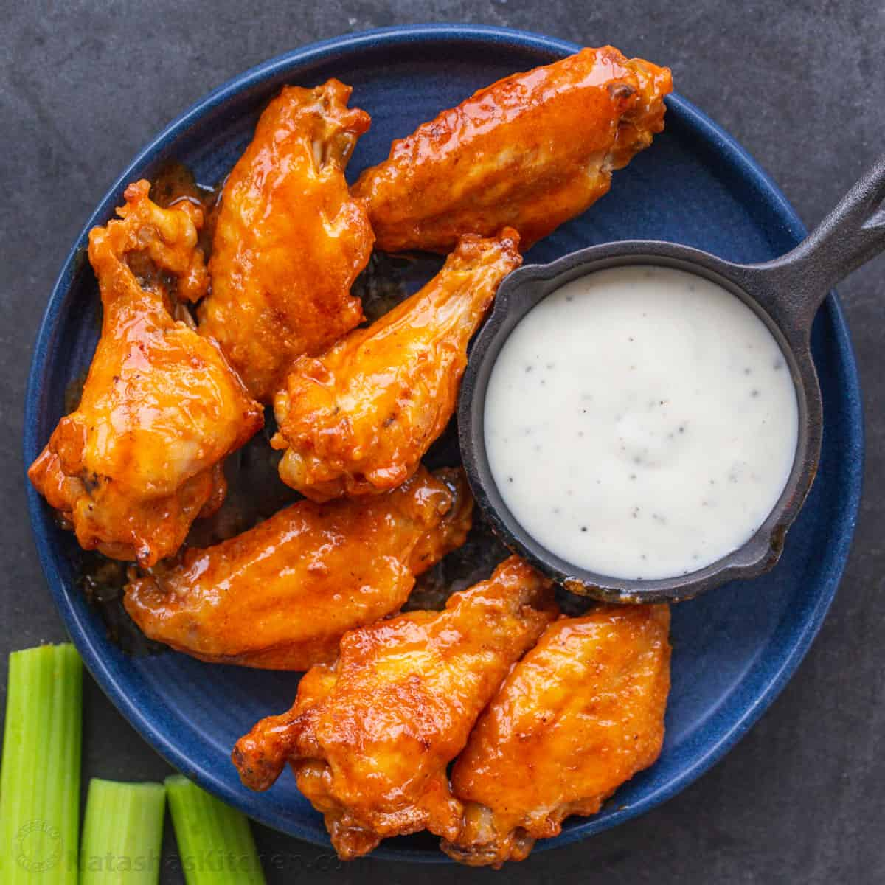

Buffalo Wings
Description:
A Buffalo wing in American cuisine is an unbreaded chicken wing section that is generally deep-fried and then coated or dipped in a sauce consisting of a vinegar-based cayenne pepper hot sauce and melted butter prior to serving.
he name "Buffalo" is now also applied to other spiced fried foods served with dipping sauces,[6] including boneless chicken wings (made from chicken breast meat), chicken fries, chicken nuggets, popcorn chicken, shrimp, and cauliflower. It also describes other dishes, such as pizza, that are seasoned with the Buffalo-style sauce or a Buffalo flavor seasoning.
Ingrediets:
- ½ cup all-purpose flour
- ¼ teaspoon ground paprika
- ¼ teaspoon cayenne pepper
- ¼ teaspoon salt
- 10 chicken wings
- 2 cups vegetable oil for frying, or as needed
- ¼ cup butter
- ¼ cup hot sauce
- 1 pinch ground black pepper
- 1 pinch garlic powder
Steps:
- Whisk together flour, paprika, cayenne pepper, and salt in a small bowl.
- Place chicken wings in a single layer in a 9x13-inch glass baking dish. Sprinkle flour mixture over top and toss until wings are evenly coated. Cover and refrigerate for 1 to 1 1/2 hours.
- Add about 1 inch oil to a deep, heavy skillet; heat to 375 degrees F (190 degrees C). (The oil should be just enough to cover wings entirely.)
- While the oil is coming to temperature, combine butter, hot sauce, pepper, and garlic powder in a small saucepan over low heat. Cook and stir until butter is melted and mixture is thoroughly blended. Remove from the heat and reserve for serving.
- Fry coated wings in the hot oil for 10 to 15 minutes, or until they begin to crisp and turn brown. Maintain the oil temperature while cooking.
- Remove wings from the oil and place on a paper towel-lined plate.
- Transfer wings to a platter and drizzle hot sauce over top; or mix wings and hot sauce in a bowl until coated. Serve.